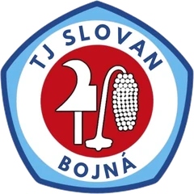

Klub a vrstvy
Futbal v Bojnej od roku 1920, od roku 1970 pod menom Slovan. Farby erbu modrá, biela a červená.
Vrstvy histórie
Najnovšie navrchu, najstaršie na dne, ako v archeologickej sonde na Valoch.

Úspechy
- 2024/25 dorast U19 víťaz IV. ligy ZsFZ, žiaci U15 víťazi súťaže ObFZ Topoľčany
- 1999, 2002 postup do V. ligy
- 1978 – 1985 I. B trieda Sever (Západoslovenský zväz)
- 2021/22 2. miesto v VI. lige ObFZ Topoľčany
Na 22. zimnom halovom turnaji ObFZ Topoľčany (5. 1. 2025, 16 mužstiev) skončilo áčko druhé po finále s FC Topoľčany 0:2, dorast vyhral svoj halový turnaj so skóre 37:9.
Zdroj: web obce Bojná (Z histórie futbalu v Bojnej), Bojnianske zrkadlo, Sportnet.
-
2025/26
Premiéra v VI. lige
Prvý ročník v VI. lige Severovýchod: 14. miesto a záchrana. Na domácich zápasoch povzbudzujú mladí fanúšikovia z Ultras Bojná.
-
2024/25
Dva tituly a postup
Dorast U19 vyhral IV. ligu ZsFZ a žiaci U15 vyhrali svoju súťaž, poháre prevzali počas domáceho zápasu mužov. Áčko skončilo v VII. lige štvrté so skóre 73:30 a pri reorganizácii postúpilo do novej VI. ligy Severovýchod.
-
2008
Umelá tráva
Viacúčelové ihrisko s umelou trávou otvoril prezident Ivan Gašparovič, starí páni Bojnej si zahrali s FC Prezident.
-
1999 – 2004
V. liga
Áčko vyhralo majstrovstvá okresu a postúpilo do V. ligy, v roku 2002 opäť do V. ligy Západ.
-
1986
Dorast v krajských súťažiach
Dorast vyhral II. triedu Juh a v kvalifikácii v Brodzanoch postúpil. Od ročníka 1986/87 hral bez prerušenia súťaže Západoslovenského zväzu, v roku 2010 už 23 rokov.
-
1976 – 1985
Tribúna a I. B trieda
V roku 1976 pribudli kabíny s krytou tribúnou pre 400 divákov. Hrajúci tréner Jozef Hlípala, bývalý druholigista zo Spišskej Novej Vsi a Topoľčian, doviedol áčko z III. triedy až do I. B triedy, kde hralo v rokoch 1978 až 1985.
-
1955
Lazňa
Futbal sa presúva na Lazňu, kde sa hrá dodnes. Klub sa volal ŠK, Družstevník a Sokol, od roku 1970 Slovan.
-
1920
Malé Dvorany pri mlyne
Futbal pred divákmi sa začína hrať na ihrisku v Malých Dvoranoch pri mlyne, len s okolitými obcami. Ihrisko sa sťahuje medzi Lúčky a Malé Dvorany.
-
začiatok 20. stor.
Prvá lopta
Prvú futbalovú loptu priniesli do Bojnej Školskí bratia, ktorí futbal hrávali aj v kláštore.
Od 2013/14
Ročníky áčka
| Ročník | Súťaž | Miesto | Skóre | Body |
|---|---|---|---|---|
| 2013/14 | majstrovstvá okresu | 15. zo 16 | 33:60 | 22 |
| 2014/15 | VI. liga ObFZ Topoľčany | 6. zo 14 | 48:46 | 38 |
| 2015/16 | VI. liga ObFZ Topoľčany | 5. zo 14 | 65:38 | 45 |
| 2016/17 | VI. liga ObFZ Topoľčany | 4. zo 14 | 65:51 | 46 |
| 2017/18 | VI. liga ObFZ Topoľčany | 13. zo 16 | 44:74 | 32 |
| 2018/19 | VI. liga ObFZ Topoľčany | 14. zo 16 | 34:65 | 25 |
| 2019/20 | VI. liga ObFZ Topoľčanynedohraná sezóna (pandémia) | 6. zo 16 | 25:17 | 24 |
| 2020/21 | VI. liga ObFZ Topoľčanynedohraná sezóna (pandémia) | 3. zo 16 | 25:16 | 18 |
| 2021/22 | VI. liga ObFZ Topoľčanynajlepšie umiestnenie v ročníkoch na Sportnete | 2. zo 14 | 71:27 | 59 |
| 2022/23 | VII. liga ObFZ Topoľčany | 3. zo 14 | 86:31 | 53 |
| 2023/24 | VII. liga ObFZ Topoľčany | 4. zo 14 | 61:26 | 49 |
| 2024/25 | VII. liga ObFZ Topoľčanypostup do VI. ligy Severovýchod pri reorganizácii | 4. zo 14 | 73:30 | 52 |
| 2025/26 | VI. liga Severovýchodprvý ročník po postupe, záchrana | 14. zo 16 | 29:63 | 24 |
| 2026/27 | VI. liga Severovýchodpo jeseni | 16. zo 16 | 16:55 | 4 |
Zdroj: konečné tabuľky zo Sportnetu, ročník 2026/27 priebežne.
Obec pod Považským Inovcom
Bojná a hradisko Valy
Hradisko Valy
Opevnené slovanské hradisko patrí k najväčším veľkomoravským aglomeráciám na Slovensku. Rozmach zažilo začiatkom 9. storočia ako mocenské a hospodárske centrum Nitrianskeho kniežatstva.
Pozlátené plakety
Najvzácnejší nález: súbor pozlátených reliéfnych plakiet, pravdepodobne z prenosného oltára. Krátke latinské nápisy na nich patria k prvým dokladom písma u Slovanov v strednej Európe.
Zvon z 9. storočia
Bronzový zvon z hradiska patrí k malej skupine najstarších kresťanských zvonov na svete.
Múzeum
Nálezy sú v Archeologickom múzeu Veľkej Moravy v Bojnej. Obec pripravuje archeoskanzen s rekonštrukciou slovanskej opevnenej brány.
Víno
Obec každú jar organizuje výstavu a ochutnávku vín, v roku 2025 už 14. ročník so 147 vzorkami.
Zdroj: Slovakia.travel (Hradisko Valy v Bojnej), TASR a SITA (múzeum a archeoskanzen), Bojnianske zrkadlo č. 56/2025.